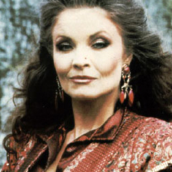

| Home | The Doctors | The Villains | |
| banner | |||
|
The Rani is a fictional character in the British science fiction television series Doctor Who. She was played by Kate O'Mara.[1] The Rani is a renegade Time Lady,[2] an evil scientific genius whose villainy comes not from the usual variety of lust for power and suchlike, but from a mindset that treats everything (including morality) as secondary to her research; she has been known toenslave entire planets such as Miasimia Goria in order to have a ready supply of experimental subjects and a place to carry out her experiments uninterrupted. Her major interest is in tinkering with other species' biochemistry — she was exiled from Gallifrey after some of her lab mice, as a result of an experiment, grew to enormous size and ate the President's pet cat, and according to The Master, "took a chunk out of him too". A past relationship between the Rani and the Doctor is hinted at[citation needed] but was never elaborated upon, although it is established they are the same age. The Rani was, like the Master, intended as a recurring foe of the Doctor, but only appeared in two serials, The Mark of the Rani andTime and the Rani, before Doctor Who went off the air in 1989. The Rani also appeared as the principal villain in Dimensions in Time, a Doctor Who charity special created for Children in Need. She was intended to appear in another serial entitled Yellow Fever and How To Cure It but the show was put on hiatus and the serial was cancelled. |